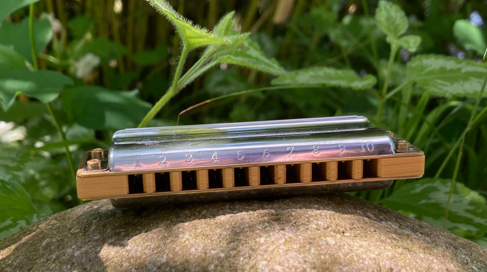

Table of Contents
1. Summary
A harmonica tool for the command line, using microphone and speaker.
Harpwise supports your harmonica practice with scales, chords and licks. It offers various tools, an explorable quiz and may guide your jamming. It can be used with diatonic (richter) or chromatic harmonicas in different keys.
2. Screencasts
The screencast below, shows how harpwise (mode 'listen') reacts on notes beeing played and how it can help to write them down. No sound has been recorded however, so some accustic imagination is required …
The second screencast is from mode 'quiz', showing three of the many flavours: hear-key, players and keep-tempo.

3. Introduction

A harmonica tool for the command line, using microphone and speaker.
Harpwise runs on the command line of Linux, MacOS and WSL2/Windows.
It plays and perceives single notes and can play chords.
The main operation modes of harpwise are 'listen', 'jamming', 'quiz' and 'licks'; these may help to:
- Learn scales and intervals
- Jam through a chord progression guided by scales and licks
- Learn and memorize licks (a few samples included)
- Train your ear and musical memory and learn related music theory by the way of quiz
Some of the other things, that harpwise can do:
- Help to find the key of a song (with an adjustable pitch)
- Interactively play intervals or note progressions
- Help in writing down a sequence of holes (journal)
- Work on bends or warbles
- Transpose a sequence of holes from one key of harp to another
- Provide an overview table of positions and keys of songs and harp
- Print notes layed out on a harmonica chart
- Print or play chords or scales
- Show full help on its usage
4. Installation
Harpwise is available from the ubuntu-repositories:
sudo apt install harpwise
as a debian package; this also works fairly well for WSL2/Windows.
For other variants of linux, you may try:
sudo snap install harpwise
(which may require you to enable the snapstore first)
for other platforms, a more manual install is required; please see the README within subdirectory install.
5. Invocation
Once you have installed harpwise, go to the commandline and type:
if you have downloaded from Github:
- cd ~/harpwise
- ./harpwise
or if you installed harpwise from the Ubuntu repositories:
harpwise
In either case, harpwise will print a usage information to get you started quickly. Or read below for additional details.
6. Getting started
Get usage information, especially a section on "Quick Start" by invoking harpwise without arguments:
./harpwise
This will show examples and options for its main operations:
- listen: listen to your playing, e.g. to monitor bends or scales
- quiz: train your ear, memory and knowledge of music theory with many different flavours. This is actually fun and an engaging way to start with harpwise.
- licks: learn licks ! A few are included and some pointers to more
- play: wise plays scales, holes, licks, chords, intervals, progressions or a reference pitch
- print: print licks, scales, etc. or produce various reports
- tools: utilities, mostly related to basic harmonica theory
- samples: record samples for holes or generate them
As an optional step you may want to create samples for the program; the resulting wav-files will be kept in directory ~/harpwise
Or, to get started quickly you may generate samples and frequencies (e.g. for the key of c):
harpwise samples generate c
If you want to work with mode licks to learn and memorize licks (highly recommended !), you will need to add new licks soon. Add them to your own lick-file, which is typically located at:
~/harpwise/licks/richter/lickswithholes.txt
this file is created on first invocation and filled with only a few sample-licks; however it contains extensive instructions on how to add new licks and some pointers to sources for more (printed and online, payed and free).
7. Getting help
If you have problems, questions or just want to give feedback, please drop me a note: marc@ihm.name
If you have a github-account and prefer a more structured approach, you may also open a github-issue.
In addition harpwise comes with a number of help sources:
- This README gives some general background and context information
- The program harpwise comes with a general usage text as well as texts specific to each mode. These texts are shown, if harpwise is invoked without arguments and contain lots of examples and descriptions for invoking harpwise and for the form of its arguments and options.
- When harpwise is running, especially in its main listen-perspective (see screenshots), you can press 'h' to get a short overview of all available keys.
- The main menu facility of harpwise (which, at times, covers the lower half of the screen and offers to choose between various items), often shows one-line descriptions of its items at the bottom.
8. Configuration
This is the user-modifyable configuration file, that will be created on first invocation:
~/harpwise/config.ini
There you may override many settings and programs default. The file is commented extensively, so please read there for details on the various settings. Initially this config-file is a copy of the programs central config-file.
See also the usage-information, which lists all of the command line options, which in many cases mirror the settings from your config.ini.
9. Some musical concepts
9.1. Scales
Scales, e.g. 'blues' or 'major pentatonic' or 'chord-i' are central for playing the harmonica. E.g. when improvising, you may stick to a specific scale.
Therefore, harpwise shows information about the scales, that a given hole belongs to; it can also play scales or print their content or quiz you about them.
For this to work best, you may:
- Give the name of your favorite scale as an argument when starting harpwise. The default is often 'blues', but you may also use e.g. 'mape' (for major pentatonic). Use 'harpwise print scales' to learn about the available scales.
- To include other scales beyound the main scale, you may add the option –add-scales on the commandline, e.g. '–add-scales chord-i,chord-iv,chord-v' In many modes of harpwise you may rotate among scales by pressing 's'.
So a typical invocation would be:
harpwise listen c blues –add-scales chord-i,chord-iv,chord-v
which shows, which of the four given scales the notes you play belong to respectively. This command line may be shortend by moving the option –add-scale to your configuration.
The wise already comes with a large set of scales; but if you still miss something, you may create your own using the tool make-scale.
You may even use an adhoc-scale by giving its holes on the commandline; see mode listen for an example.
9.2. Licks
Licks help you to grasp the style and ideas of other players. Harpwise allows to build and organize a whole collection of licks. For each lick there is a recording and the sequence of holes that (mostly) make it up.
Out of the factory, harpwise only has a few older licks with expired copyright and amateur recordings; an example would be a lick from the St-Louis blues.
To work fruitfully with licks, you should record your own or buy some decent lick collections (me beeing not connected with any of those). See your lick-file for pointers and instructions:
~/harpwise/licks/richter/lickswithholes.txt
10. Some technical concepts
10.1. The reference hole
The wise can remember a hole that you have played and later refer to it; this is useful e.g. to show the interval between the current hole and the reference, or to show the deviation from the currently played frequency to the nominal frequency of the hole, e.g. when practicing bends.
To set the reference, you simply play the desired note and hit the key 'r' at the same time. To clear the reference you just hit 'r' when not playing anything.
10.2. When multiple holes produce the same note
Many harps produce identical notes on certain holes; e.g. the diatonic harmonica on holes -2 and +3. There are even more cases e.g. for a chromatic harmonica.
Harpwise cannot distinguish between such holes either and treats them alike in all aspects (display, quiz, notation).
For writing down licks however, you are free to use any of those multiple holes.
10.3. Tuning
The harp wise does not make assumptions about the tuning of your harmonica; e.g. it works equally well with 'equal temperament' (ET) or 'just intonation'. Simply because, it asks you to play your own harp to generate samples (whatever its tuning might be). It then computes frequency values from these samples. (Remark: for a quick start you may have skipped this step using automatic sample generation)
However, sometimes harpwise has to choose one tuning, e.g. when doing sample generation or when your samples need to be judged against some standard. In such cases it generally uses 'equal temperament' (ET for short).
11. A closer look at the Screen
Please note, that the wise tries to adapt itself to different screen (terminal) sizes. If your terminal window supports changing the screen size, then harpwise will react accordingly and you do not need to restart it.
You probaby get the best experience if you use a larger font and a terminal with a modest size, e.g. 80 cloumns and 25 rows.
Also note, that harpwise uses figlet to display some information in large letters. The optical result of this may vary, and you may get a smoother appearance by choosing another font; personally I use 'Lucida Console' (at least under WSL2/Windows).
Now if you start harpwise e.g. in mode listen, or licks or some flavours of quiz, you get a screen as shown in the screenshots above.
Its structure is as follows (top to bottom):
- Header: topmost 2 lines
- The 'display': a larger area taking up most of the upper half of the screen
- The middle part of the screen, three lines in the middle of the screen
- The 'comment': a larger area taking up most of the lower half of the screen
- Footer: the bottommost 2 Lines
11.1. The header
Two topmost two lines, that show e.g.
- The current mission, i.e. what you are supposed to do
- Immediate feedback on keys beeing pressed or a hint on how to get help
- A summary of the settings mode, type, key and scales
11.2. The 'display'
This part of the screen (i.e. most of its upper half) shows different versions of a harmonica chart as known from textbooks. In addition, the holes, that you are playing are highlighted in colours, e.g. according to the scale.
To change the display type 'd' repeatedly or type 'D' to get a menu with descriptions.
11.3. The middle part of the screen
The three middle lines of the screen show:
- The hole and note, that you are playing and the reference hole, if set. In addtion ('Rem') the scales the hole belongs to
- The Frequency you are playing; featuring a small frequncy gauge
- The interval of the current hole to the reference hole or to the last hole played
11.4. The 'comment'
This part of the screen (i.e. most of its lower half) shows comments; e.g. when in mode licks, harpwise expects you to play a sequence of holes, the comment-region shows the sequence of holes that you have already played or are expected to play.
To change the comment type 'c' repeatedly or type 'C' to get a menu with one-line descriptions.
11.5. The footer
Within those two lines at the bottom, harpwise shows hints and various remarks on its operation.
For example:
- In mode licks, details about the current lick
- In mode listen, if idle, notes about famous harp-players